Ota-ona va o‘quvchi kursni o‘zi tanlaydi, darajasini aniqlaydi va sinov darsiga yoziladi. Siz esa lid, guruh, davomat, to‘lov va o‘qituvchilarni bitta ekrandan boshqarasiz. Quyida — nima qila olishi, qanday ishlashi va nima beradi.
Muammo va yechim
Eski sayt (atlantis-study.uz) ochilmaydi, Instagram asosan 2020-yil postlari, xaritalarda eski manzil hali turibdi. Narx, jadval va bo‘sh o‘rin haqida har bir savol — telefon orqali. Ochiq manbalar, 24.09.2026
Video qo‘llanma
1-tizim · O‘quvchi va ota-ona sayti
Har bir bo‘lim bitta savolga javob beradi: «qaysi kurs menga mos, darajam qanaqa, qachon o‘qiyman, joy bormi, qayerga boraman?»
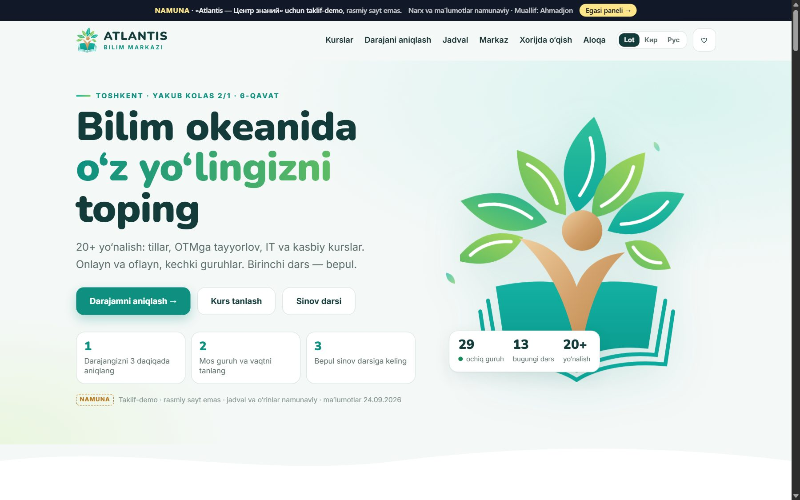
Barglar sokin «nafas oladi». Birinchi ekranda: 20+ yo‘nalish, onlayn/oflayn, kechki guruhlar, bepul birinchi dars va jonli raqamlar — ochiq guruhlar va bugungi darslar (boshqaruv tizimidan olinadi).
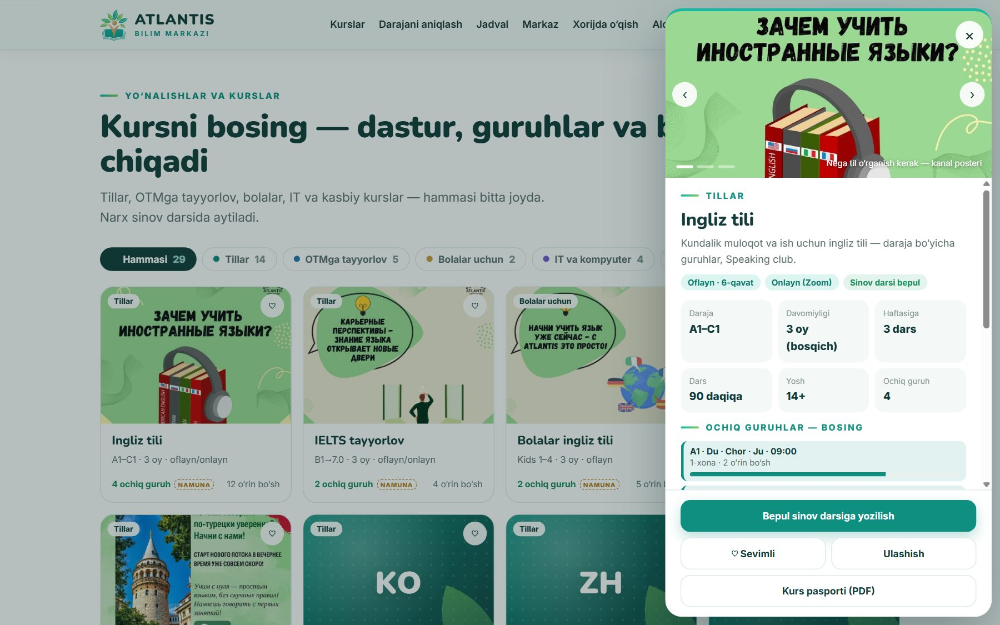
29 ta kurs 6 yo‘nalishda: tillar, OTMga tayyorlov, bolalar, IT, kasbiy, xorijda o‘qish. Kartada — kanal posterlaringiz, daraja, davomiylik, haftalik yuklama, format, ochiq guruhlar va dastur.
Narx saytda ko‘rsatilmaydi — sinov darsida aytiladi (siz shunday xohlasangiz).
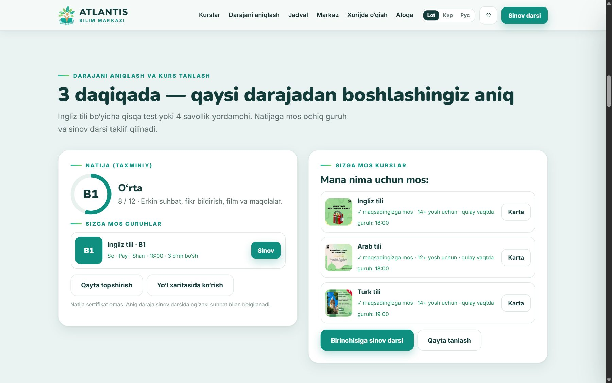
Ingliz tili bo‘yicha 12 savol → taxminiy daraja (A1–C1) va shu darajadagi ochiq guruhlar. «Menga mos kurs» — maqsad, yosh, vaqt, format bo‘yicha 4 savol va 3 ta kurs, nega mosligi bilan.
Halol: natija «taxminiy, sertifikat emas» deb yozilgan — aniq daraja sinov darsida belgilanadi.
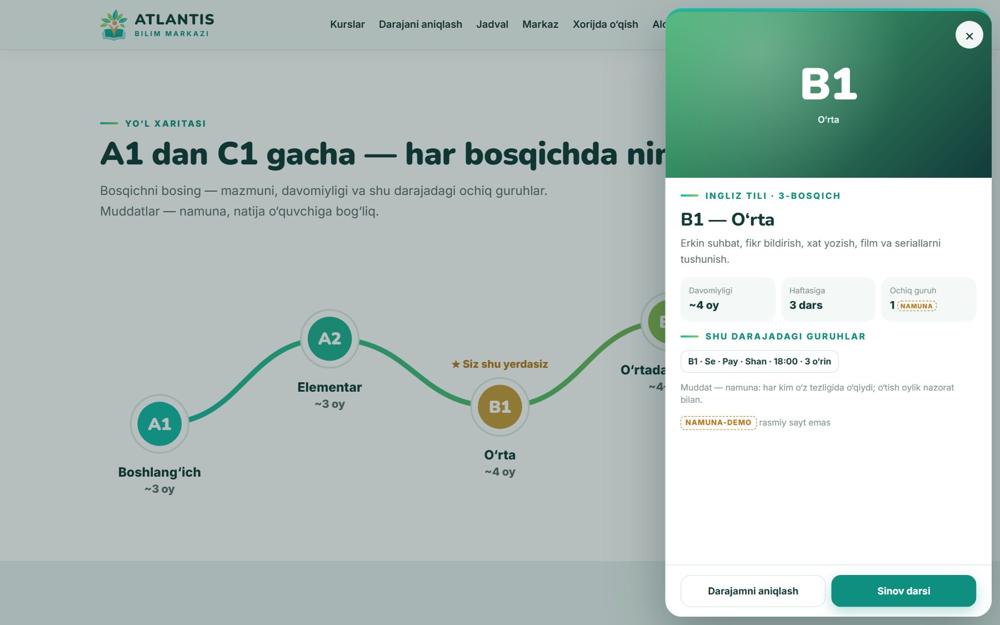
Bosqichni bosing — nimani o‘rganadi, qancha davom etadi va shu darajadagi guruhlar. Testdan keyin «Siz shu yerdasiz» belgisi paydo bo‘ladi.
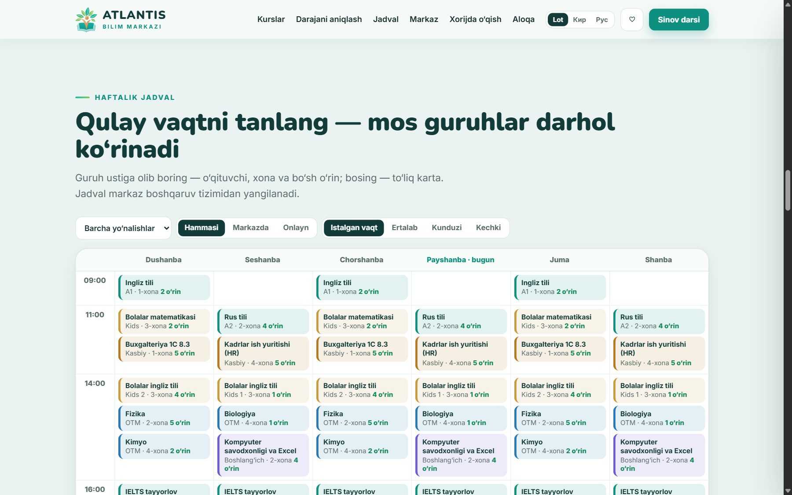
Kun × soat. Filtr: yo‘nalish, markazda/onlayn, ertalab/kunduzi/kechki. Guruh ustiga borsangiz — xona, o‘qituvchi va bo‘sh o‘rin; bossangiz — to‘liq karta va «shu guruhga sinov darsi».
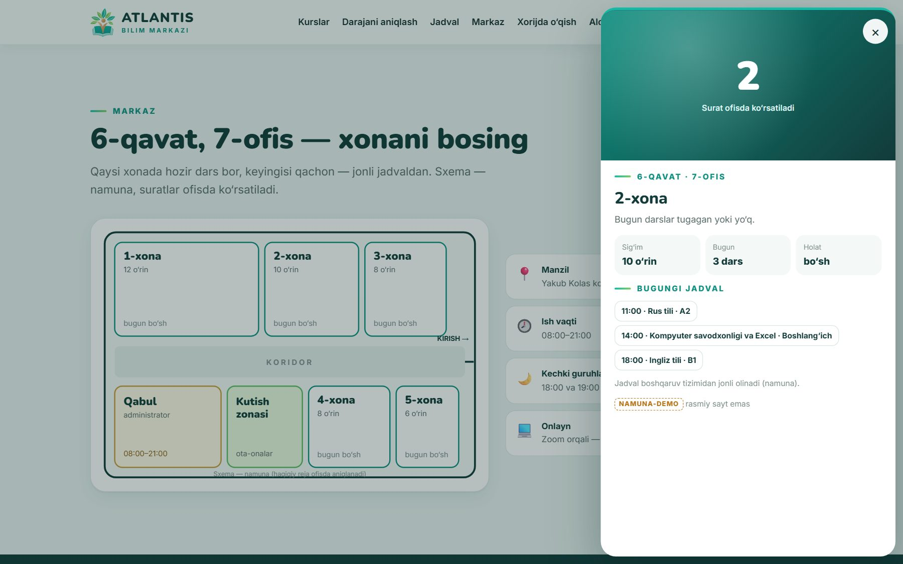
Qabul, kutish zonasi va 5 ta xona. Xonani bosing — hozir qaysi dars ketyapti, keyingisi soat nechida, bugungi jadval. Ota-ona qayerga kelishini oldindan biladi.
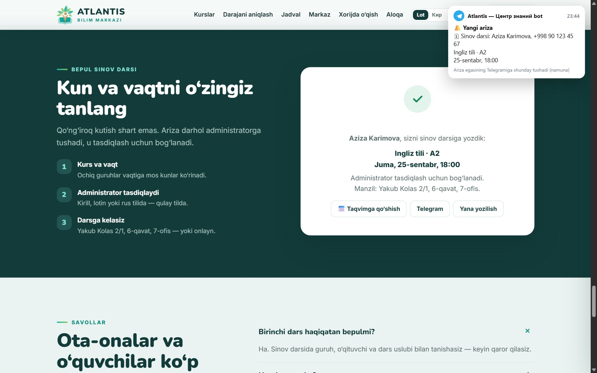
Kurs → faqat guruh bor kunlar → vaqt va bo‘sh o‘rin → ism, telefon, kim uchun (o‘zim/farzandim), aloqa tili. Ariza boshqaruv tizimida lid + sinov darsi bo‘lib tushadi, Telegramga xabar keladi.
2-tizim · Boshqaruv tizimi
Alohida manzilda ochiladi. Uch rol: direktor hammasini ko‘radi va tasdiqlaydi, administrator kundalik ishni qiladi, o‘qituvchi faqat o‘z guruhlari va davomatini ko‘radi.
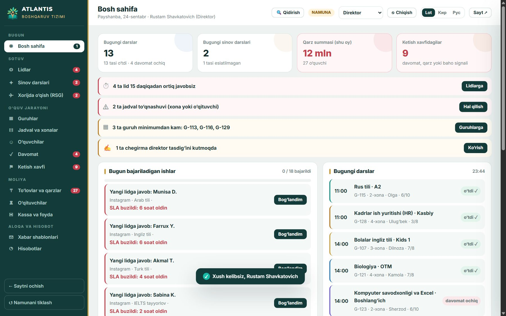
4 raqam: bugungi darslar, sinov darslari, qarz summasi, ketish xavfidagilar. Qizil qator: javobsiz lidlar, xona to‘qnashuvi, to‘lmayotgan guruhlar, tasdiq kutayotgan chegirmalar. Pastda — «Bugun bajariladigan ishlar», har biri bir tugmada.
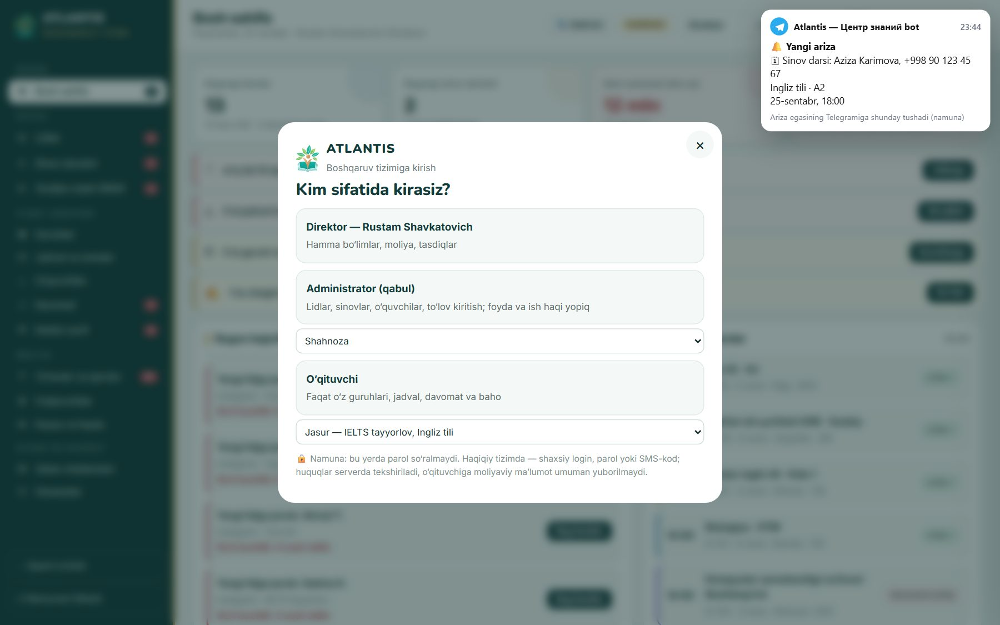
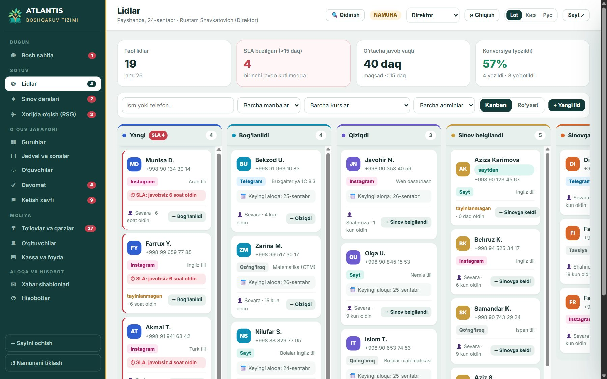
Kanban: Yangi → Bog‘lanildi → Qiziqdi → Sinov → Keldi → Yozildi. Manba (Instagram, Telegram, sayt…), mas’ul administrator, keyingi aloqa sanasi. 15 daqiqada javob berilmasa — qizil belgi. Yo‘qotishda sabab majburiy — hisobotda qaysi sabab ko‘pligi ko‘rinadi.
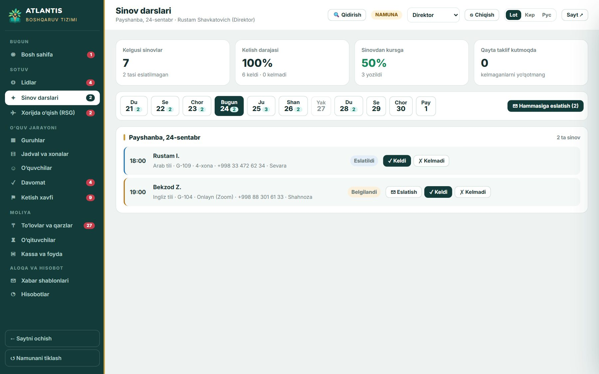
Kun tasmasi, har bir sinov: vaqt, guruh, telefon. «Eslatish» — tayyor xabar o‘quvchi tilida. Keldi/Kelmadi bir bosishda, kelmaganga «qayta taklif», kelganni — to‘g‘ridan-to‘g‘ri kursga yozish va birinchi to‘lov.
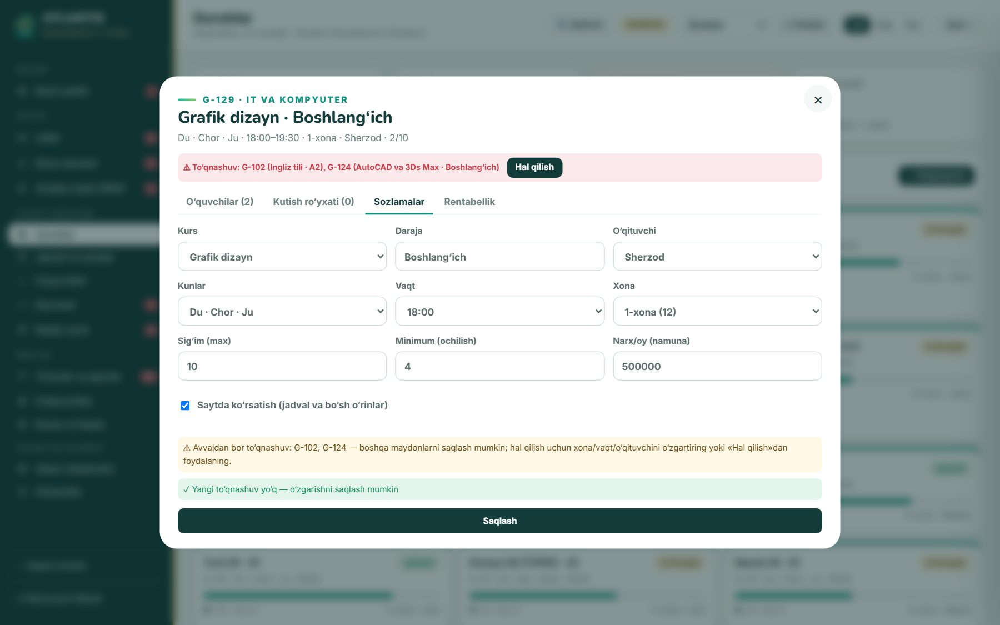
Guruhni ochish yoki ko‘chirishda tizim darhol tekshiradi: xona band, o‘qituvchi band, sig‘im xonadan katta — va bo‘sh xona, bo‘sh vaqt yoki zaxira o‘qituvchini taklif qiladi. Guruh to‘lishi, minimum, kutish ro‘yxati va rentabellik (direktor uchun).
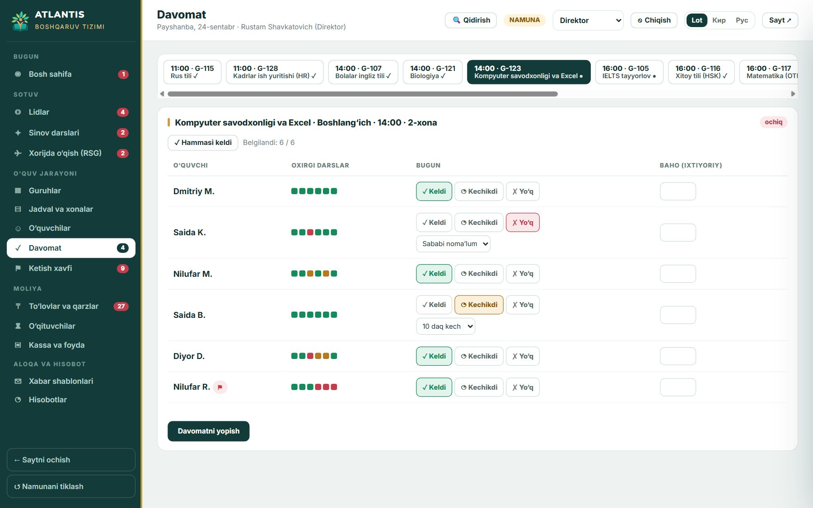
O‘qituvchi: «Hammasi keldi», keyin kelmaganlarni belgilaydi (sabab: kasal, oilaviy, sababsiz), kechikkanlarga daqiqa, xohlasa baho. Yopilgach — sababsiz kelmaganlarning ota-onasiga xabar (lotin, kirill yoki rus tilida), faqat tasdiq bilan.
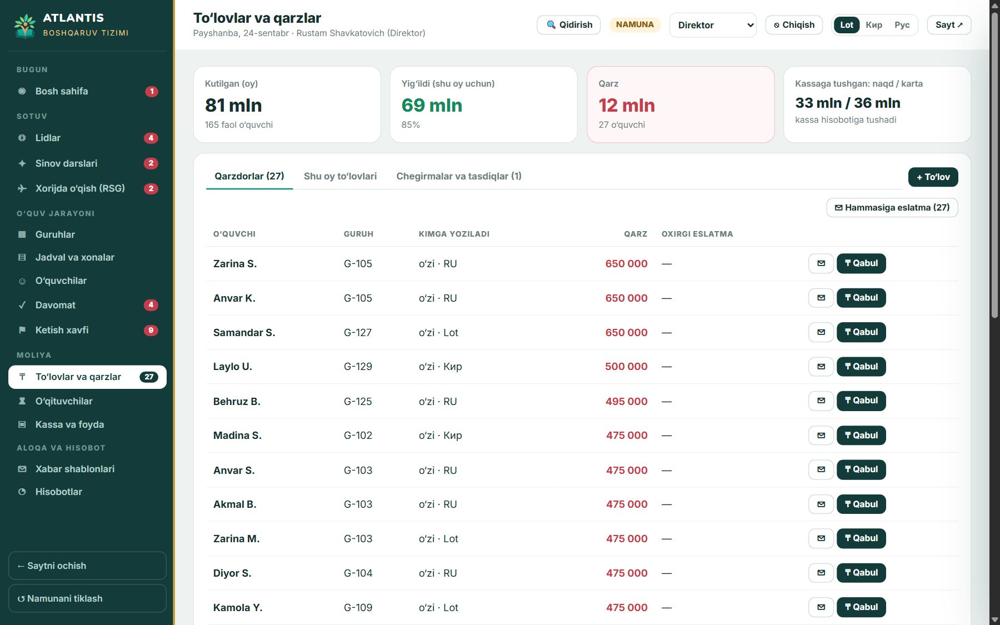
Oylik kutilgan / yig‘ilgan / qarz, naqd va karta. To‘lov qabul qilish (aralash naqd+karta ham), chek, oldindan to‘lov. Chegirma: 10% gacha administrator, undan katta — direktor tasdig‘i; hammasi tarixda (kim so‘radi, kim tasdiqladi).
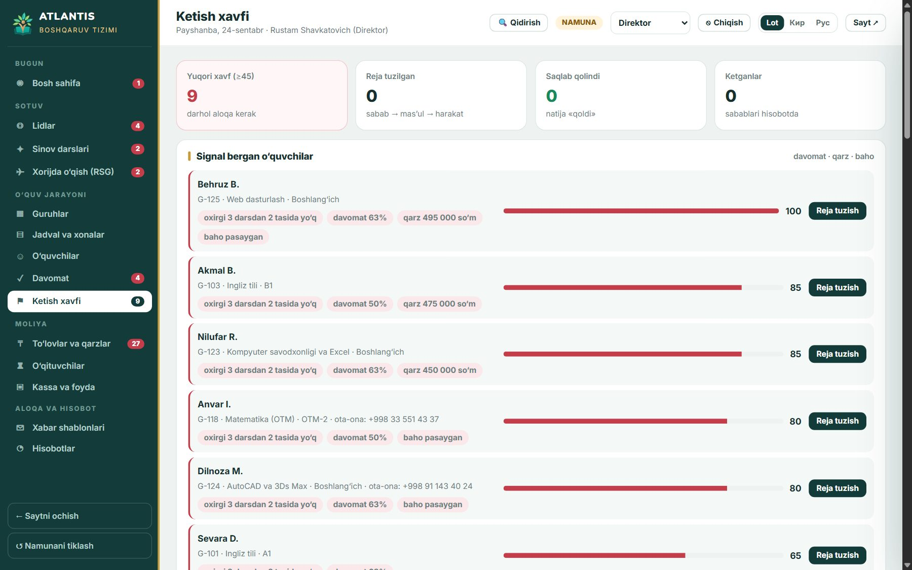
Signal: oxirgi darslarda kelmayapti, davomat pasaygan, qarz, baho tushgan. Har biriga reja: sabab → mas’ul → harakat (qo‘ng‘iroq, ota-ona bilan uchrashuv, guruh almashtirish) → natija.
Tizim «albatta ketadi» deb bashorat qilmaydi — faqat signal beradi, qarorni odam qiladi.
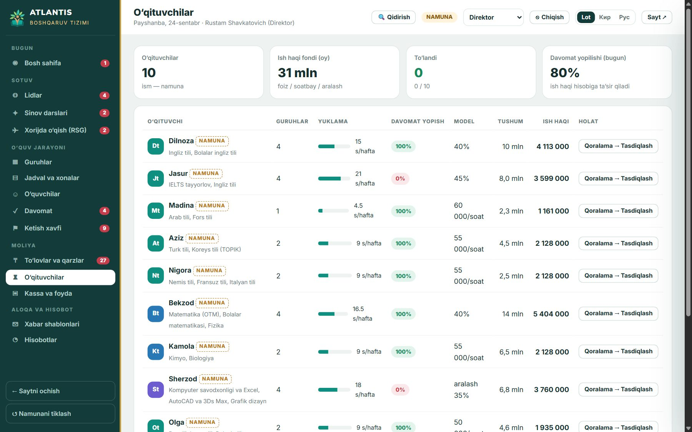
Yuklama (soat/hafta), guruhlar, davomat yopilishi, oylik tushum va ish haqi. Hisob: qoralama → direktor tasdig‘i → to‘landi.
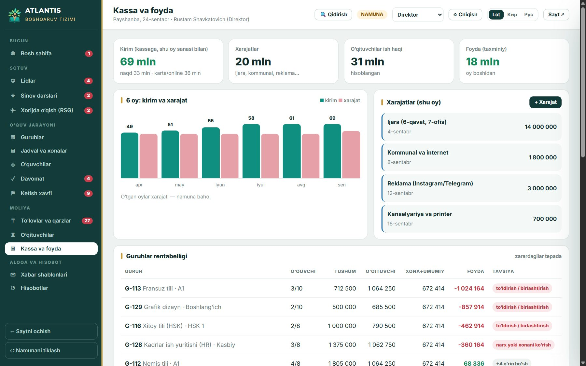
Kirim, xarajatlar, ish haqi, taxminiy foyda, 6 oylik grafik. Har bir guruh rentabelligi: tushum − o‘qituvchi − xona ulushi, zarardagi guruhga tavsiya.
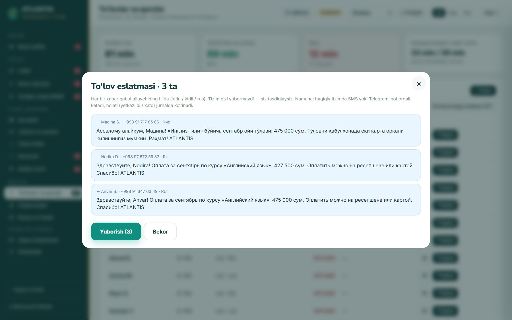
Sinov eslatmasi, to‘lov, darsga kelmadi, joy bo‘shadi, oylik natija. Kirill ko‘rinishi avtomatik. Har bir yuborilgan xabar jurnalda. Hisobotlar: manba bo‘yicha voronka, yo‘qotish sabablari, administratorlar, kurslar; Excel uchun CSV.
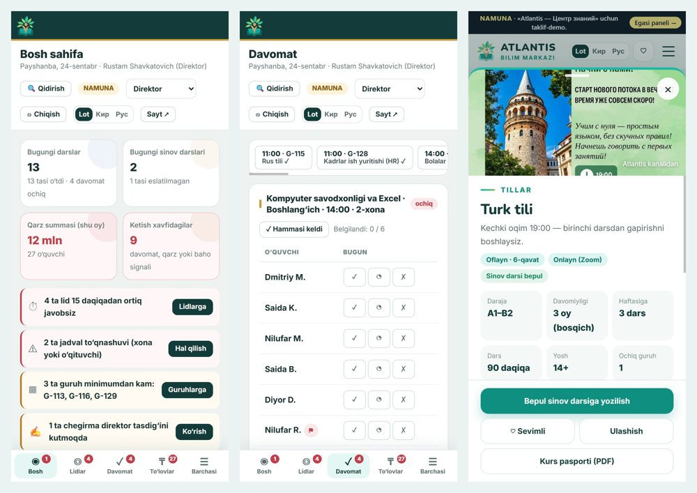
Pastki menyu: bosh sahifa, lidlar, davomat, to‘lovlar. Saytdan ariza kelsa — panelda darhol «Saytdan yangi ariza»; guruhni to‘ldirsangiz — saytdagi jadval o‘zi yangilanadi.
Nima beradi
O‘zingiz hisoblang
O‘z raqamlaringizni kiriting — hisob faqat shu raqamlardan (hech qanday taxminiy statistika qo‘shilmaydi).
Ishga tushirish
Savollar
Yo‘q, ular reklama uchun qoladi. Sayt ular olib kelgan odamni kutib oladigan rasmiy joy bo‘ladi: postdagi havola kursga yoki sinov darsiga olib boradi.
Ha. O‘qituvchi uchun asosan bitta ekran — davomat (✓ ◔ ✗). Administrator uchun «Bugun ishlar» ro‘yxati. Topshirishda o‘rgatamiz, birinchi oy yordam beramiz.
Haqiqiy tizimda ma’lumotlar yopiq serverda, har bir xodim o‘z paroli bilan kiradi, huquqlar serverda tekshiriladi, kunlik zaxira nusxa olinadi. Bu namunada ma’lumot faqat brauzeringizda saqlanadi.
Namunada: kurslar, manzil, telefon va suratlar — Telegram kanalingiz, 2GIS va ochiq manbalardan. Guruhlar, o‘quvchilar, narxlar va o‘qituvchi ismlari — «namuna» (to‘qima). Haqiqiy tizimda — sizning ma’lumotlaringiz.
Guruh, jadval, narx, xabar shablonlari — boshqaruv tizimidan o‘zingiz o‘zgartirasiz. Yangi bo‘lim kerak bo‘lsa — kelishilgan holda qo‘shiladi.
Maslahat: ikkalasini ikki oynada oching — saytdan sinov darsiga yoziling va boshqaruv tizimida ariza darhol paydo bo‘lganini ko‘ring.